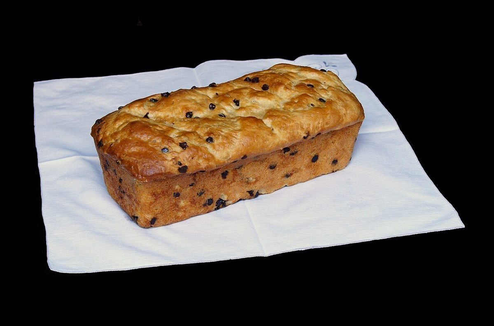
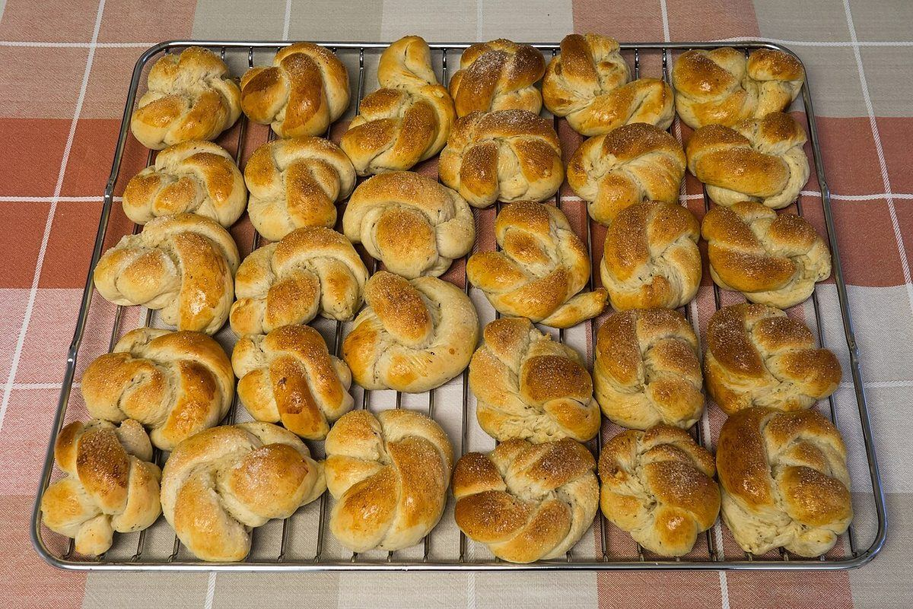

制作側の連想
裁断機の部位を、配置図にしてみる
手でレバーを下ろして紙を切る裁断機の部位を図にしたもので、制作側の連想です。お店の理念・由来とは無関係で、実際の製品の仕様を示すものでもありません。六つの部位に番号をふり、上の図と並べています。
凡例
六つの部位
- 1台座(ベース板)いちばん下に敷く平らな板で、紙をのせる面。表に方眼の線が入っていることが多い。
- 2目盛り(定規)台座の縁に沿って入る物差しで、紙を置く位置をそろえる目安にする。
- 3刃台座の端に沿う細長い金属の板で、紙を切るところ。
- 4アーム(切断レバー)台座の角に留められた長い棒で、上げ下げして刃を動かす。
- 5ハンドルアームの先にある握りで、手で持って動かすところ。
- 6紙押さえ紙の上に渡す細い横棒で、切るあいだ紙が動かないように押さえる。
写真(イメージ)
写真(イメージ)





写真はイメージです。お店のものではありません。
ご案内
お店のこと(確認できたものだけ)
| 所在地 | 〒728-0021 広島県三次市三次町78−１ |
|---|---|
| 電話 | 準備中 |
| 営業時間 | 準備中 |
| 定休日 | 準備中 |
| ご予約 | 準備中 |
| 駐車場 | 準備中 |
| SNS | Instagram @place_dessert_ |